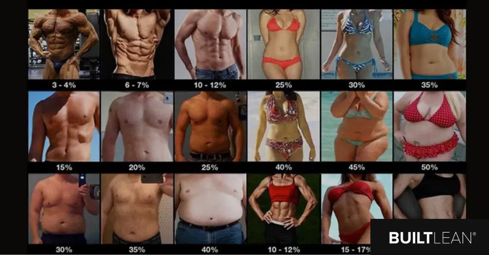

1. ข้อมูลพื้นฐาน Basic Info
💡 หมายเหตุ: ควรวัด % ไขมันจากเครื่องวัดที่น่าเชื่อถือ (DEXA / InBody / Bioimpedance ที่ calibrate แล้ว) หรือถ้าไม่สะดวกวัด ให้ประเมินคร่าวๆ จากภาพด้านล่างนี้

FM (Fat Mass): 10.50 kg
LBM (Lean Body Mass): 59.50 kg
2. ระดับกิจกรรม Activity Factor
3. ผลลัพธ์ BMR & TDEE
BMR
— kcal/วัน
Basal Metabolic Rate
TDEE
— kcal/วัน
Total Daily Energy Expenditure
แสดงวิธีคำนวณ
—
4. เป้าหมายแคลอรี่ Goal
เป้าหมาย — kcal/วัน
5. โปรตีน Protein
โปรตีน: — g (— kcal)
พลังงานที่เหลือ: — kcal
6. แบ่ง Carb / Fat Macro Preset
เลือก preset เพื่อแบ่ง พลังงานที่เหลือ (หลังหักโปรตีน) เป็นคาร์โบไฮเดรตและไขมัน
📌 หมายเหตุสำคัญ — คุณภาพของไขมัน & CVD risk
ไม่ว่าจะเลือก preset ไหน คุณภาพของไขมันสำคัญกว่าปริมาณ โดยเฉพาะคนที่เลือก Low-Carb ที่ไขมัน 75% ของพลังงานที่เหลือ
✅ เน้น — ไขมันไม่อิ่มตัว
- น้ำมันมะกอก extra virgin, อะโวคาโด
- ถั่วและเมล็ด (อัลมอนด์, วอลนัท, เมล็ดเจีย, ฟักทอง)
- ปลาไขมันสูง (แซลมอน, แมคเคอเรล, ซาร์ดีน, ทูน่า) — โอเมก้า 3
- ไข่ทั้งฟอง
- เนยถั่วธรรมชาติ (ไม่มีน้ำตาล/น้ำมันเติม)
⚠️ ลด — ไขมันอิ่มตัว (SFA)
- หมูสามชั้น, ของทอด, ฟาสต์ฟู้ด
- เนื้อแดงแปรรูป (เบคอน, แฮม, ไส้กรอก, ซาลามี)
- เนย, ครีม, ชีสไขมันเต็ม ปริมาณมาก
- น้ำมันมะพร้าว/ปาล์ม ปริมาณมากต่อวัน
AHA แนะนำ < 10% ของพลังงานรวม
❌ หลีกเลี่ยง — Trans Fat
- มาการีน, เนยเทียม
- ขนมอบเชิงพาณิชย์ (โดนัท, คุกกี้สำเร็จรูป)
- ครีมเทียม non-dairy
- ของทอดจากน้ำมันใช้ซ้ำหลายครั้ง
🔬 หลักฐานเรื่อง CVD & Insulin Sensitivity
- LDL อาจสูงขึ้นใน 30–40% ของคนที่ทำ low-carb (มากในกลุ่ม "lean mass hyper-responders") — ควรตรวจ lipid profile ก่อนเริ่ม + ที่ 3 และ 6 เดือน
- Triglyceride, HDL, HbA1c ส่วนใหญ่ดีขึ้นบน low-carb โดยเฉพาะในคน metabolic syndrome
- T2DM remission: มีหลักฐานชัด 1–2 ปี (Virta Health, DiRECT trial) — ระยะยาว >5 ปียังจำกัด
- Insulin sensitivity: ดีขึ้นเฉพาะคนที่มี IR/prediabetes/T2DM อยู่แล้ว — ในคนสุขภาพดีอาจเกิด physiological insulin resistance ชั่วคราว (กลับมาปกติเมื่อกินคาร์บ)
- CVD outcome ระยะยาว: หลักฐานที่แข็งที่สุดคือ Mediterranean diet (PREDIMED trial — MUFA สูง, ปลา, ผัก, ถั่ว) — Low-carb แบบ Med-style ปลอดภัยกว่า keto แบบเน้นเนื้อ/เบคอน
- การศึกษา observational (Seidelmann 2018, Lancet Public Health): มีรูป U-shape — ทั้ง very-low-carb และ very-high-carb สัมพันธ์กับ mortality สูงขึ้นเมื่อเทียบกับ 50–55% carb
⚕️ แอปนี้ใช้สำหรับการวางแผนทั่วไป ไม่ใช่คำแนะนำทางการแพทย์ — ผู้มีโรคประจำตัว (เบาหวาน, ไขมันสูง, โรคหัวใจ, โรคไต) ควรปรึกษาแพทย์/นักโภชนาการก่อนเปลี่ยน macro อย่างมีนัยสำคัญ
โปรตีน · Protein
— g · — kcal · —%
คาร์บ · Carb
— g · — kcal · —%
ไขมัน · Fat
— g · — kcal · —%
รวม — kcal/วัน
7. ประวัติการชั่ง History
ติดตามการเปลี่ยนแปลงน้ำหนัก / %ไขมัน เมื่อเวลาผ่านไป
ยังไม่มีประวัติ — กดปุ่ม "📝 บันทึกการชั่งวันนี้" ใน Section 1 เพื่อบันทึกครั้งแรก